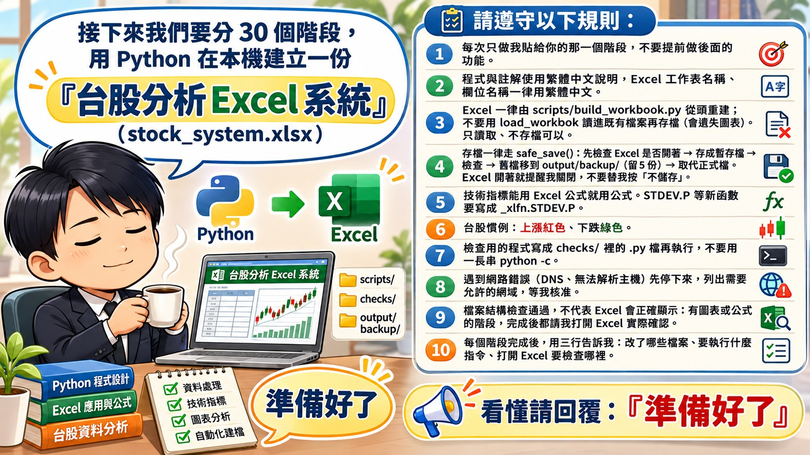

⓪ 開場規則卡（第一次對話先貼這張）
讓 Claude Code 每一階段都照同樣的節奏做，比較好教也好除錯。

接下來我們要分 30 個階段，用 Python 在本機建立一份「台股分析 Excel 系統」（stock_system.xlsx）。請遵守以下規則： 1. 每次只做我貼給你的那一個階段，不要提前做後面的功能。 2. 程式與註解使用繁體中文說明，Excel 工作表名稱、欄位名稱一律用繁體中文。 3. Excel 一律由 scripts/build_workbook.py 從頭重建；不要用 load_workbook 讀進既有檔案再存檔（會遺失圖表）。只讀取、不存檔可以。 4. 存檔一律走 safe_save()：若 stock_system.xlsx 正在 Excel 開啟 → 先備份 → 自動「儲存並關閉」這一個活頁簿（不要用 active workbook，不動其他檔案，絕不按「不儲存」）→ 存成暫存檔 → 檢查 → 舊檔移到 output/backup/（留 5 份）→ 取代正式檔。自動關閉失敗時才停下來提醒我。 5. 技術指標能用 Excel 公式就用公式。STDEV.P 等新函數要寫成 _xlfn.STDEV.P。 6. 台股慣例：上漲紅色、下跌綠色。 7. 檢查用的程式寫成 checks/ 裡的 .py 檔再執行，不要用一長串 python -c。 8. 遇到網路錯誤（DNS、無法解析主機）先停下來，列出需要允許的網域，等我核准。 9. 檔案結構檢查通過，不代表 Excel 會正確顯示：有圖表或公式的階段，完成後都請我打開 Excel 實際確認。 10. 每個階段完成後，用三行告訴我：改了哪些檔案、要執行什麼指令、打開 Excel 要檢查哪裡。 看懂請回覆「準備好了」，先不要寫任何程式。
常見錯誤與解決辦法（19 項）
Python 版本不足：Mac 內建 3.9 不夠。用 python.org 或 Homebrew 安裝 3.12／3.13，重建 .venv。（階段 2）
安裝檔簽章驗證失敗：停止安裝。重新下載、確認系統時間正確後再驗；仍失敗就改用 Homebrew。（階段 2）
DNS／無法解析主機：網路被限制。核准網路存取，或把 pypi.org、files.pythonhosted.org、Yahoo 財經網域加入允許清單。（階段 3、6、10）
移除筆數看不出原因：空值與零成交量分開計數。（階段 7）
#NAME?：openpyxl 寫入新函數要加前綴：_xlfn.STDEV.P。（階段 16）
圖表消失：不要 load_workbook 舊檔再存檔；Excel 跳出「修復」時不要存檔，重新執行一鍵更新。（規則 3、階段 8）
圖表被 Excel 修復刪除：日期軸要設定 y_axis.crossAx = x_axis.axId。（階段 8、18、25）
均線從 0 跳起：圖表資料範圍從第一筆有效值開始：MA5 第 8 列、MA20 第 23 列、MA60 第 63 列。（階段 12、17）
兩張圖重疊：固定錨點：價格 AE3、成交量 AE28、RSI AE53、KD AE78、MACD AE103、布林 AE128，每張間隔 25 列。（階段 13～18）
MACD 負的柱子變白色：不要用 invertIfNegative；把柱狀體拆成正柱、負柱兩個數列，分別設紅、綠色。（階段 15）
交叉點或突破點被畫在 0：標記用的輔助欄要回傳 NA()，不要回傳 ""。（階段 16、20）
檢查指令語法錯誤：檢查程式寫成 .py 檔再執行。（規則 7）
公式結果沒更新：Excel 在手動計算：「公式」→「計算選項」→「自動」，再按 F9。（階段 5、22）
結構檢查通過但畫面不對：一定要打開 Excel 實際確認。（規則 9）
忘記關 Excel：safe_save() 會先備份，再自動儲存並關閉 stock_system.xlsx（只關這個檔），寫入不會中斷。自動關閉失敗才會停下來提醒。（階段 5、28）
Mac 跳出「控制 Microsoft Excel」權限：第一次自動關閉時出現，到「系統設定」→「隱私權與安全性」→「自動化」允許。（階段 5）
~$ 檔一直在，卻沒開 Excel：上次當機留下的殘留檔，safe_save() 確認 Excel 沒開這個檔後會自動刪除。（階段 5）
更新後回測參數被改回預設：參數以 config.json 為準，更新前自動讀回 Excel 裡改過的參數。（階段 23、28）
更新失敗或檔案壞掉：正式檔不會被動到；到 output/backup/ 拿最近一份備份。（階段 5）